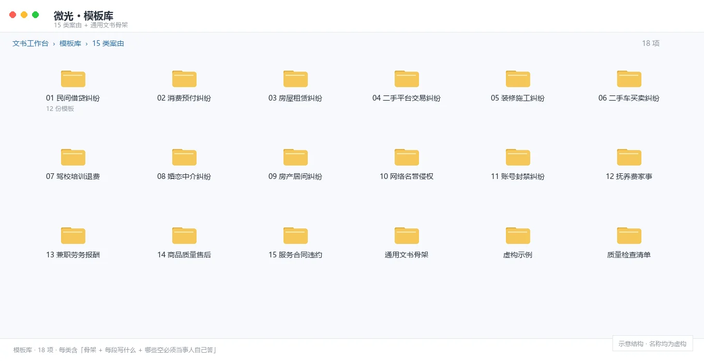
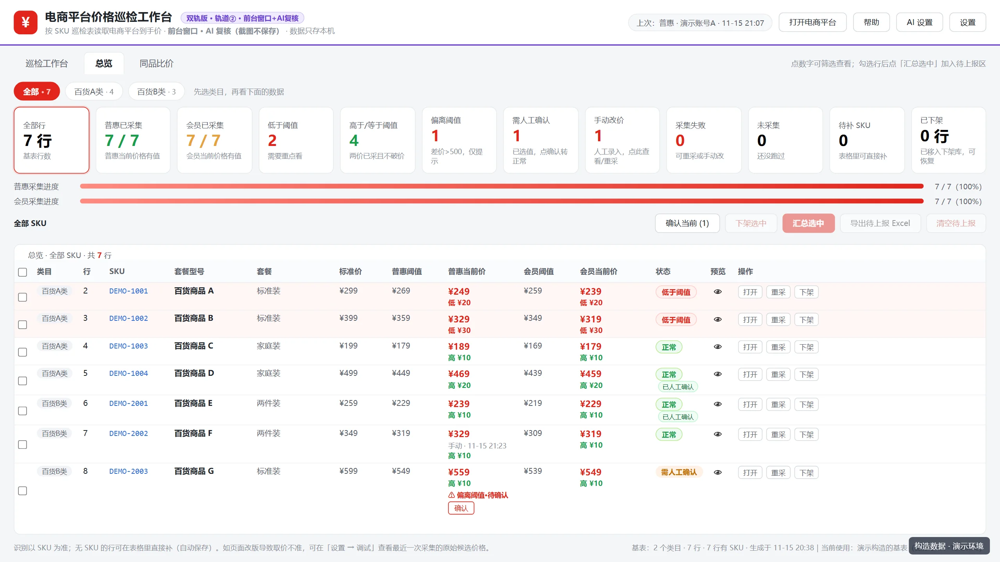
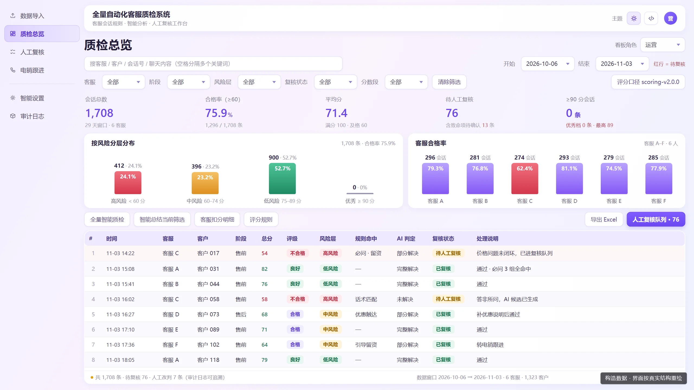
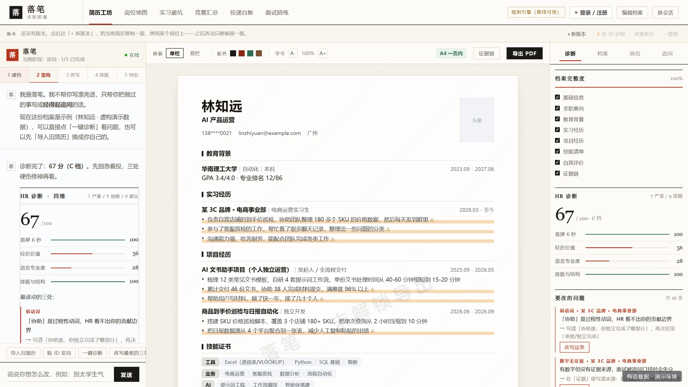
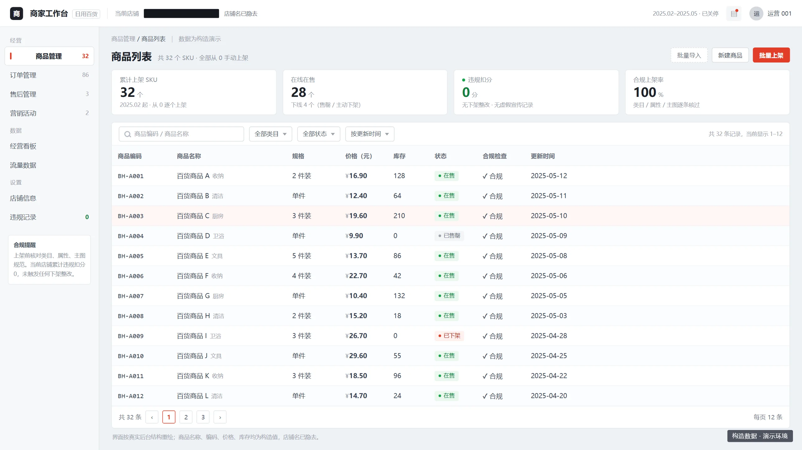
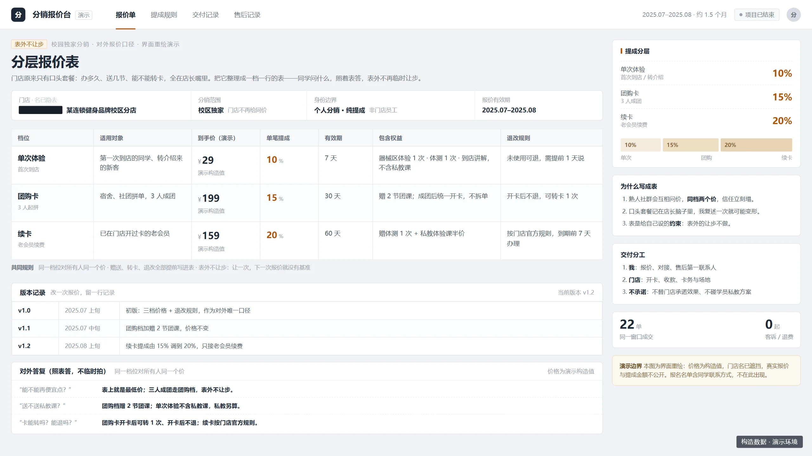

01创业项目 · 2025.07 起步 → 2026.07 延续
微光 · 民事文书辅助
把非标的小额纠纷咨询，做成一条可复用的文书起草流水线。
- 98 份交付文书
- 89 人完成在线立案
独立开发者 · 产品设计师 · 超级个体
2024 年至今，一个人把产品从零做到卖出去。我不写代码，靠的是一直学新工具、攒新知识——在校园里，也在真实的市场上。
2026 · 集团内赛
2026 年 1024 CVTE 编程马拉松 ·「永不宕机奖」
工会 × CTO 办公室联合主办 ｜ 参赛者为正职工程师与非软件岗，全场唯一实习生 ｜ 参赛作品：价格监控平台

01创业项目 · 2025.07 起步 → 2026.07 延续
把非标的小额纠纷咨询，做成一条可复用的文书起草流水线。

02实习交付 · 2026.11
手动抄 146 个商品页的价格要 3 小时；改成点一次按钮，23 分 42 秒跑完并标红破价。

03实习交付 · 2026.09–2026.11
把每天只抽查 2%~5% 的客服会话，变成全量质检；人不在，系统自己跑完一整批。

04个人产品 · 2026.10–至今
把简历当「被攻击的靶子」：先找出会被追问的地方，再决定怎么写。

05商业实践 · 2025.02–2025.05
三个人合伙开店三个月，因品类竞争与流量不足主动关停，写了一份亏损诊断报告。

06商业实践 · 2025.07–2025.08
冷对接健身门店，谈下校园独家分销权，自己建群卖卡、自己售后。
02 /Caliber
这一页的每个数字都能追到一个文件。冲突时，我不取平均。
数字一旦离开出处，就会被当成承诺。所以每个关键数字后面都有一个标记：它有日志或后台导出，还是我在某个假设上算的，还是两份材料互相打架。
估算不是猜。基数可查、假设写明、方向可验证——这三件事做不到，我就不写这个数。假设写在项目同目录的「口径与待确认清单」里，不藏在脑子中。
两份材料数字冲突时，我不取平均，也不挑最大的那个。我先找口径差异：分母是谁、时间窗落在哪天、去重规则是什么；然后选最保守、且能被别人复算的那个值，其余的降级为待核实。
为什么
敢标估算
估算不是「大概」：基数可查、假设写在清单里、方向可验证。读者能按我的假设重算，算不平就说明我错了——这比一个查不到来源的精确数字更可靠。
完整写法与两个真实例子，放在 「方法」页。
下面每一条都覆盖本站出现的数字：数字 → 标记 / 口径 / 时间窗 / 来源。来源写的是文件名，不是链接；原始材料在本地归档，不随站点发布。
| 数字 | 口径 | 时间窗 | 来源 |
|---|---|---|---|
| 23 分 42 秒 实测 | 价格巡检全量单轮耗时。2 个账号 × 约 140 个 SKU，含登录、逐页取价、结果汇总。掐表实测。 | 2026.11 | 本人计时记录 |
| 约 3 小时 估算 | 人工基线，同一流程：登录 2 个账号、逐个搜索 SKU、核对价格标准表。本人实操回忆，非掐表。假设：SKU 数量约 140 个。 | 2026.11 之前 | 本人回忆 |
| 约 2 小时 36 分 推算 | 每轮节省 = 3 小时 − 23 分 42 秒。假设人工与工具处理的是同一批 SKU。 | 2026.11 | 由上行两数相减 |
| 约 57 小时/月 推算 | 月节省 = 2.6 小时 × 22 个工作日。假设：每天跑一轮、每月 22 个工作日、无中断。此假设未经验证。 | 按 2026.11 常态推演 | 由每轮节省推算 |
| 146 实测 | 有 SKU 的基表行数。基表共 153 行，其中 7 行空置或已下架。4 个类目：36 / 51 / 43 / 16。 | 2026.11 | 扩展内置基表 |
| 76%（82 条中 62 条） 实测 | 旧版取价逻辑的会员价误读率。样本为 2026-11-04 一次批量巡检的 127 条记录，其中会员价 82 条来自标签页解析。 | 2026.11.04 单次 | 误读归因报告 |
| 59 / 59 实测 | 平台适配端到端验收用例通过数。headless Edge 157.0.4341.42、1440×900、23 秒、console 0 error，脚本可重跑。 | 2026.11 | 验收脚本输出 |
| 15 / 15 实测 | 三个取价引擎在 15 个构造商品页上的逐字段一致性断言，全部一致。构造页覆盖 PLUS、比价卡片、拆分数字、隐藏价等场景。 | 2026.11 | 一致性矩阵输出 |
| 1,708 实测 | 全量客服质检 29 天窗口内进入质检的会话数，配套口径为 6 客服、1,323 客户、21,770 条消息，其中售前 1,433。 | 2026.09–2026.11（29 天窗口） | 系统导出的质检记录 |
| 56.2 分 / 29.4% 实测 | 同一批 1,708 会话的平均分与合格率，规则 + AI 维度全部跑完。低于 60 分占 70.6%，90 分以上 0 条。 | 2026.09–2026.11 | 系统导出的质检记录 |
| 20 实测 | 同事在试用期内逐条给出的真实反馈条数，不含我自己的测试留言，已按条落地并记录处理结果。 | 2026.10 | 反馈原件 |
| 14–23 元/月 估算 | 全量 AI 质检的月度调用成本。假设：按「一分钱 3–5 条」的单价与全量会话数推算，未含重试与失败调用。 | 2026.10 | 文档内自标假设 |
| 13,611 实测 | OfferFit 34 个 py/js/html/css 文件的非空行数（含 850 行纯注释）。物理总行 14,945，空行 1,334。剔除注释后真代码 12,761 行。三种口径都可复算，卡片上写的是非空行。 | 2026.10–2026.11 | 本人逐文件统计 |
| 49 实测 | OfferFit 用户侧 API 接口数。共 57 个端点（GET 20 / POST 35 / PATCH 1 / DELETE 1），排除 8 个 /api/admin/* 运营后台接口后为 49；去重唯一路径 54 个，前端实际直调 47 个。项目无框架路由表，是 stdlib http.server 手写 if 链分派。 | 2026.10–2026.11 | server.py 逐条核对 |
| 0 实测 | OfferFit 付费用户数。商业机制（定价 / 会员 / 额度 / 风控）已完整实现，未完成一次真实收款。 | 截至 2026.11 | 数据库计数 |
| 18,680 实测 | 校区健身卡分销的代收流水，不是我的个人收入；我拿的是提成，提成金额未记录。 | 2025.07–2025.08 | 收款汇总记录 |
| 22 实测 | 成交单数，与 23 条报名名单基本吻合（1 人未成交）。 | 2025.07–2025.08 | 报名名单 + 订单核对 |
| 30+ 实测 | 拼多多店铺从 0 完成合规上架的 SKU 数。部分链接后期被平台下架，未逐条复核。 | 2025.02–2025.05 | 店铺后台导出 |
| 100+ 人次 / 89 人 / 98 份 实测 | 微光累计口径，分两个阶段推进（2025 年暑期起步 → 2026 年暑期延续）：累计咨询 100+ 人次（2025.07 至今累计，去重）；完成在线立案 89 人（累计，指当事人自行在平台提交完成）；交付文书 98 份（累计）。流程为人工主导的半自动工作流，不是全自动系统。 | 2025.07–至今 | 逐条记录去重统计 |
| 15 实测 | 微光已定稿并实际使用过的文书模板类数，按模板目录计数，不含草稿。 | 2025.07–至今 | 模板目录 |
03 /About
不放照片，也不放头衔。想看细节就去看项目。
我在广州，一个人做产品：需求、代码、定价、售后，都自己走一遍。
我做事的默认假设是：同一件事做三次，就该交给机器。
立志做一个懂技术、也懂业务的人——不写代码，但一直学新技术，知道它能解决什么、代价是什么。
擅长带着新的技术和眼光，回头看那些「一直都是这么干」的流程。我关心的不是能不能做出来，而是做出来以后有没有人真的用它。
广州理工学院 · 自动化（2028 届在读）
最近
2026 年 1024 CVTE 编程马拉松 · 永不宕机奖
工会与 CTO 办公室联合主办，全公司 75 支队伍参赛、12 支进决赛。我以「重复留给 AI」单人成队，作品《价格巡检程序》排第 16（距大奖区差 4 名），获「永不宕机奖」——按参赛队伍 30% 评定，本届 21 支。我是全场唯一的实习生——参赛群里没有一个是在校生。同一届我还以另一支 2 人队提交了 AI 全量客服质检系统。
04 /Code
六个仓库，每个都打 tag：从第一版到最后交出去的那版，中间改坏了又改回来的提交都留着。业务数据已脱敏——只留结构与逻辑，真实客户、型号、价格、密钥都不入库。
想看某一段是怎么改出来的，进仓库按 tag 切过去——每次提交只做一件事，commit message 里写了当时在修什么。全部仓库 ↗